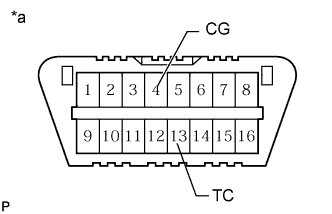

КИНЕТИЧЕСКАЯ ДИНАМИЧЕСКАЯ СИСТЕМА ПОДВЕСКИ > ПРОВЕРКА / СБРОС КОДОВ DTC |
| ПРОВЕРЬТЕ DTC (С ПОМОЩЬЮ ПОРТАТИВНОГО ДИАГНОСТИЧЕСКОГО ПРИБОРА) |
Проверьте DTC.
Подсоедините портативный диагностический прибор к DLC3.
Включите зажигание (IG) и питание портативного диагностического прибора.
Войдите в следующие меню: Chassis / KDSS / DTC.
Следуя подсказкам на экране портативного диагностического прибора, считайте коды DTC.
Удалите DTC.
Подсоедините портативный диагностический прибор к DLC3.
Включите зажигание (IG) и питание портативного диагностического прибора.
Войдите в следующие меню: Chassis / KDSS / DTC.
Следуя подсказкам на экране диагностического прибора, сбросьте диагностические коды неисправности DTC.
| ПРОВЕРКА DTC (С ПОМОЩЬЮ ДИАГНОСТИЧЕСКОГО ЖГУТА ПРОВОДОВ SST) |
Проверьте DTC.
|  |
С помощью SST соедините контакты 13 (TC) и 4 (CG) на DLC3.
| *a | Вид спереди разъема DLC3 |
Включите зажигание (IG).
Считайте коды DTC, выводимые контрольной лампой KDSS на щитке приборов.
См. таблицу диагностических кодов неисправностей (стр. Нажмите здесь).
После завершения проверки снимите диагностический жгут проводов SST с разъема DLC3.
Удалите DTC.
Убедитесь, что зажигание выключено.
С помощью SST соедините контакты 13 (TC) и 4 (CG) на DLC3.
| *a | Вид спереди разъема DLC3 |
Включите зажигание (IG).
Удалите коды DTC, сохраненные в памяти ЭБУ, нажав педаль тормоза 8 или более раз в течение 5 секунд.
Убедитесь, что контрольная лампа KDSS мигает, включаясь на 0,25 с и выключаясь на 0,25 с.
Выключите зажигание.
Отсоедините SST от контактов разъема DLC3.